Pieza reutilizable: no lleva fechas ni condiciones de la promoción. Solo anuncia que hay promo este fin de semana y empuja a escribir por WhatsApp cuanto antes. Abajo están las seis escenas con sus frames clave para pedir ajustes.
Una gota cae sobre fondo azul noche, salpica y las ondas se convierten en la escotilla de una lavadora que gira como un remolino. El remolino implota con un destello y el logo se arma: el contorno se dibuja, el tambor entra girando, la ola se revela, las burbujas saltan y las letras LAVALEX caen con rebote. Brillo final y aparece “Alquiler de lavadoras”.
Locución opcional(Solo música y efectos: gota, remolino, impacto)
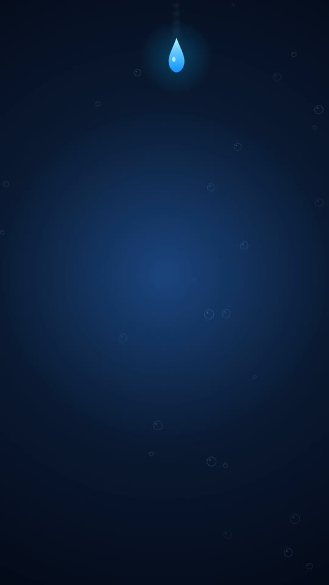
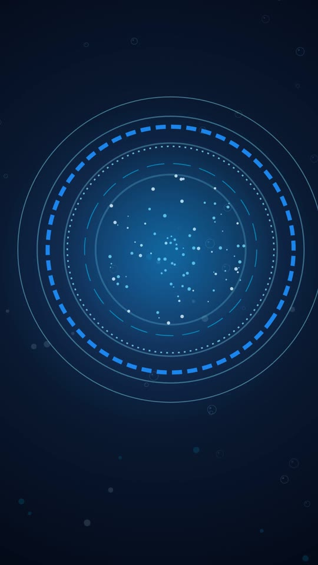
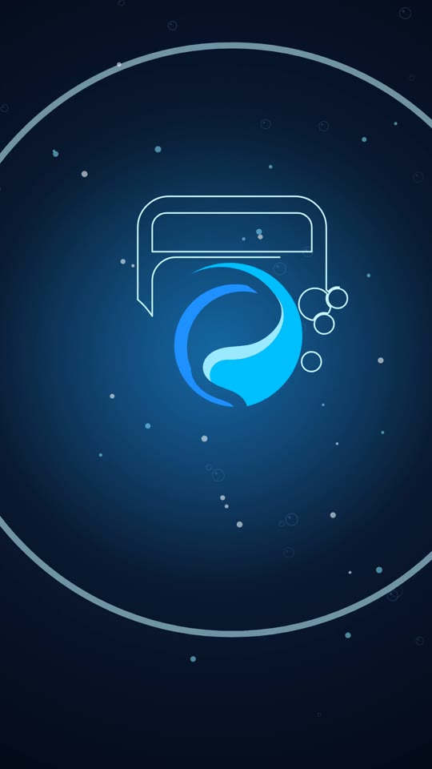
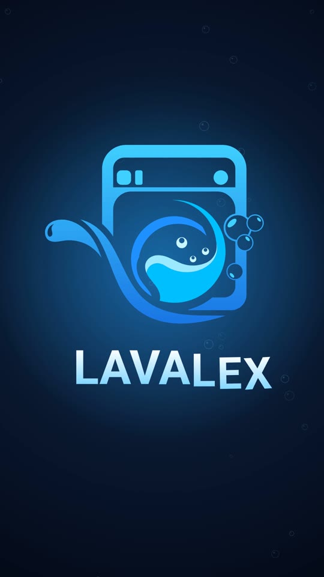
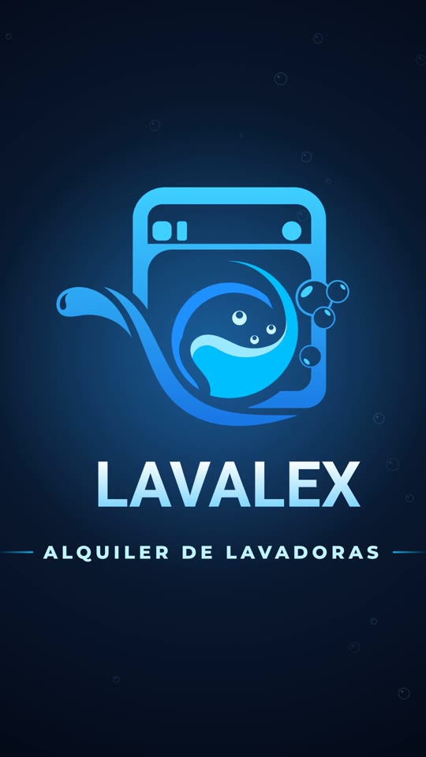
Ola de transición a azul marca. Titulares con golpe: “¿Montañas de ropa sucia?” mientras cae un montón de ropa. Entra la lavadora LAVALEX, la ropa vuela a la escotilla, el tambor acelera y vibra: “¡Tenemos algo para ti!”
Locución opcional“¿Montañas de ropa sucia? Tranquilo… ¡tenemos algo para ti!”
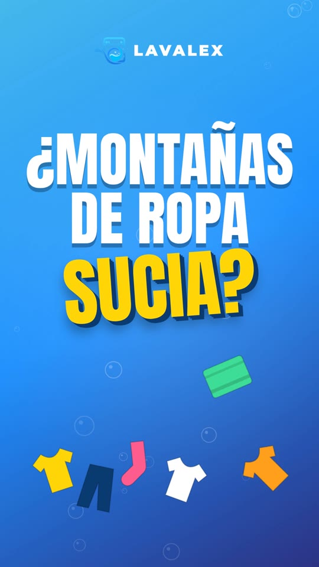
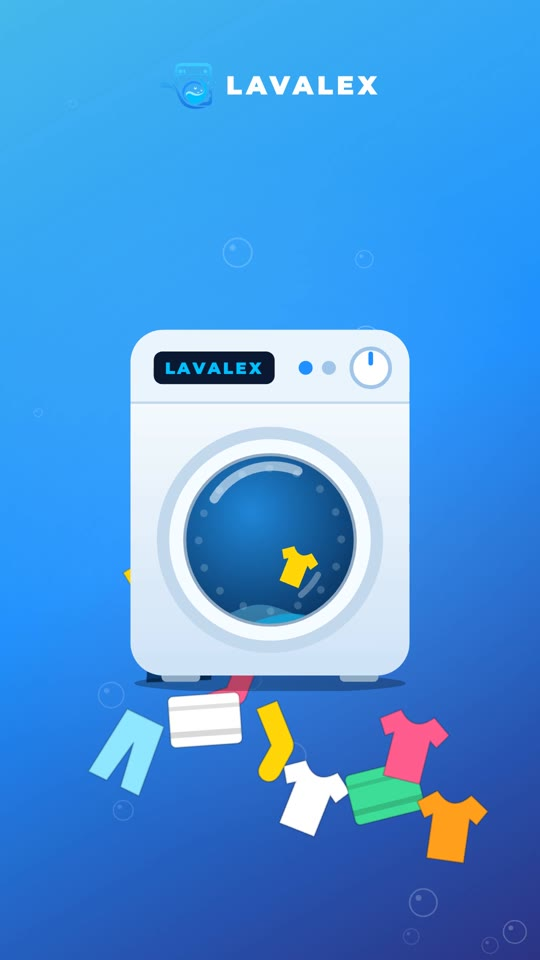
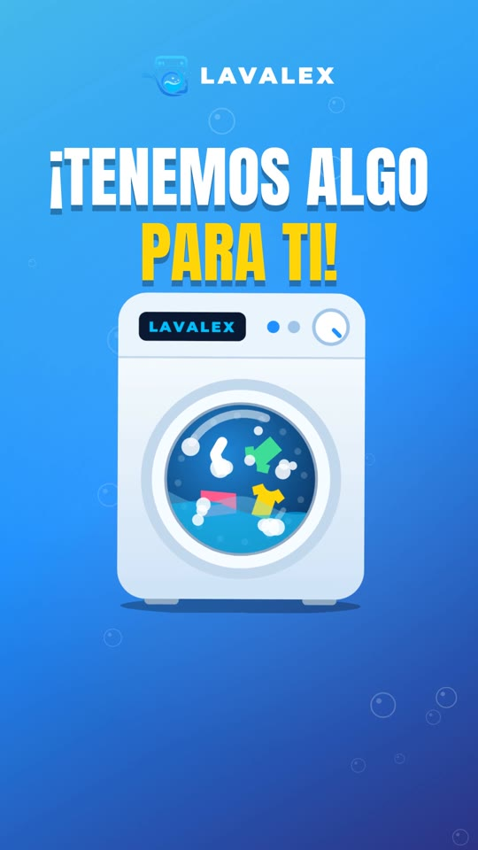
Zoom a través de la escotilla con destello. “PROMO” golpea en amarillo con extrusión 3D y temblor de cámara, se despliega la cinta “FIN DE SEMANA”, el sello “¡No te la pierdas!” entra girando y explota confeti con “en alquiler de LAVADORAS”. Después, calendarios SÁB / DOM con sellos de check: “¡Válida solo este fin de semana!”
Locución opcional“¡Llegó la promo de fin de semana en alquiler de lavadoras! Válida solo este fin de semana.”
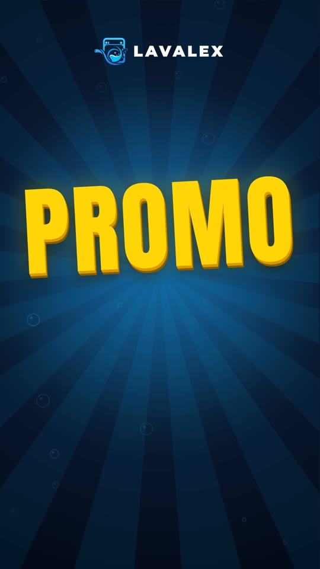
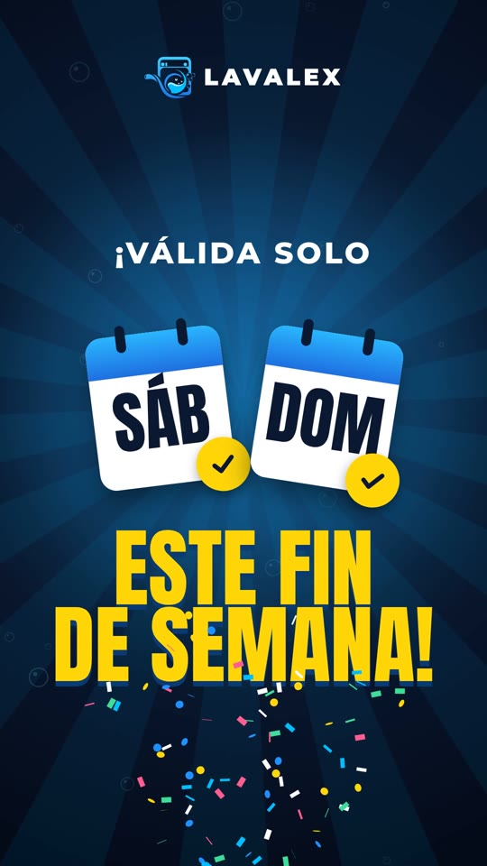
Transición de burbujas a escena clara. “Tú descansas, la lavadora trabaja”: la lavadora gira con espuma y entran tres chips: ropa siempre limpia, más tiempo para ti, cero complicaciones.
Locución opcional“Tú descansas, la lavadora trabaja.”
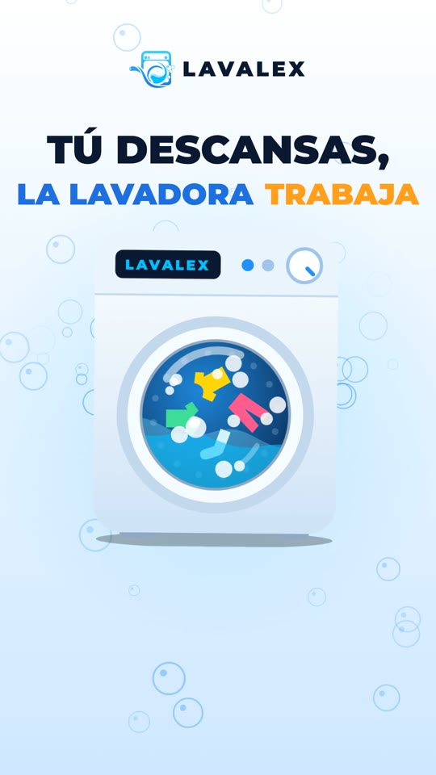
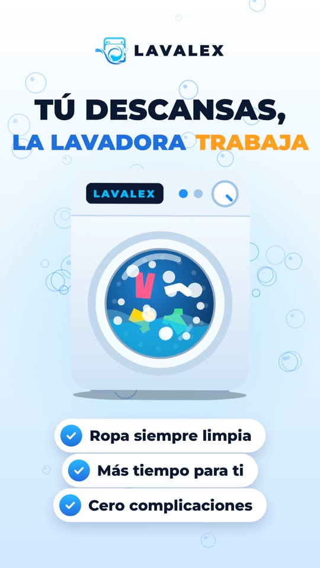
Barrido diagonal a azul noche. “¡Escríbenos cuanto antes!” golpea en pantalla, sube un celular con un chat: se escribe “¡Hola! Quiero la promo del fin de semana”, se envía y LAVALEX responde. Aparece el botón verde con el número y ondas de pulso.
Locución opcional“Escríbenos cuanto antes por WhatsApp y aparta la tuya.”
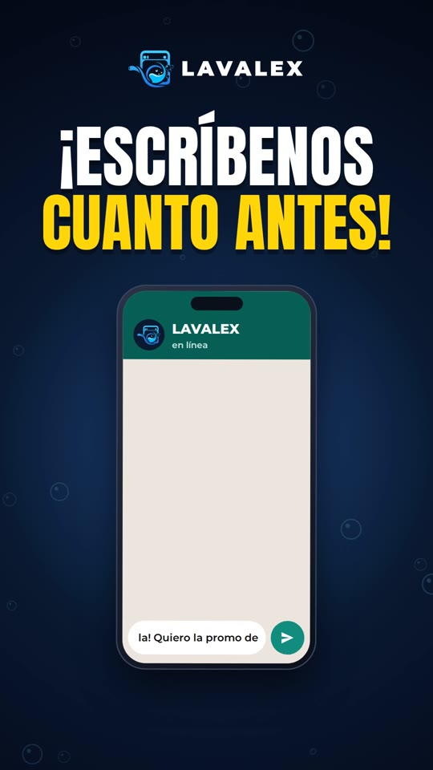
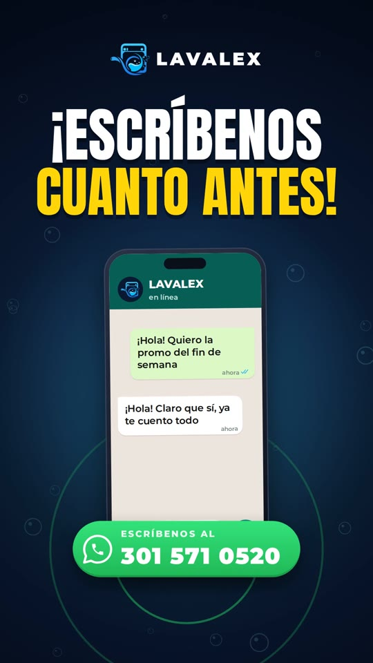
Destello y el logo se vuelve a armar en versión rápida, tagline, botón de WhatsApp con pulso y “¡Te esperamos!”. Segundo brillo sobre el logo y fundido.
Locución opcional“LAVALEX, alquiler de lavadoras. ¡Te esperamos!”
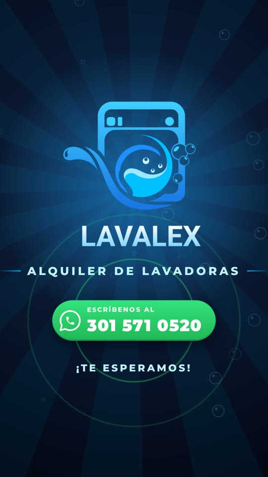